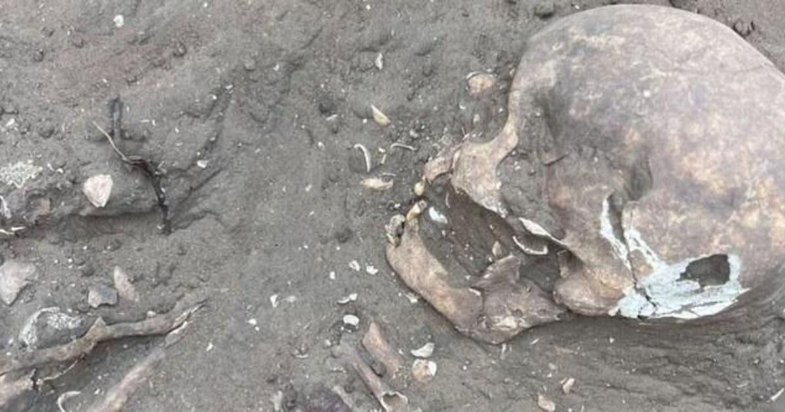

Treasure trove of ancient artifacts and skeletons found in Brazil could rewrite country's history, archaeologists sayWorkers were just starting construction on a new apartment complex in northeastern Brazil when they began finding human bones and pottery shards, their edges worn smooth by time. Soon, excavations at the site in the coastal city of Sao Luis had uncovered thousands of artifacts left by ancient peoples up to 9,000 years ago -- a treasure trove archaeologists say could rewrite the history of human settlement in Brazil. The lead archaeologist on the dig, Wellington Lage, says he had no idea what he was getting into when Brazilian construction giant MRV hired his company, W Lage Arqueologia, in 2019 to carry out an impact study at the site -- part of the routine procedure of preparing to build an apartment building. Covered in tropical vegetation and bordered by the urban sprawl of Sao Luis, the capital of Maranhao state, the 15-acre plot was known as Rosane's Farm, for the daughter of a late local landholder. Researching the site, Lage learned intriguing vestiges had been found in the area since the 1970s, including part of a human jawbone in 1991. His team soon found much more: a flood of stone tools, ceramic shards, decorated shells and bones. In four years of digging, they have unearthed 43 human skeletons and more than 100,000 artifacts, according to Brazil's Institute for National Historic and Artistic Heritage (IPHAN), which announced the discovery last week, calling it "grandiose." "Barely scratched the surface" Researchers now plan to catalogue the artifacts, analyze them in detail, put them on display and publish their findings. "We've been working four years now, and we've barely scratched the surface," said Lage, a 70-year-old Sao Paulo native whose wife and two children are also archaeologists. In a video posted to social media by IPHAN, archaeologist can be seen working at the site, sifting through bones and artifacts. "The excavations continue, indicating the potential for new discoveries," the caption reads. "Incredible, right?" The preliminary findings are already grabbing attention in the scientific community. Lage says his team -- which grew to 27 people in all, including archaeologists, chemists, a historian and a documentary filmmaker -- has found four distinct eras of occupation at the site. The top layer was left by the Tupinamba people, who inhabited the region when European colonizers founded Sao Luis in 1612. Then comes a layer of artifacts typical of Amazon rainforest peoples, followed by a "sambaqui": a mound of pottery, shells and bones used by some Indigenous groups to build their homes or bury their dead. Beneath that, about 6.5 feet below the surface, lies another layer, left by a group that made rudimentary ceramics and lived around 8,000 to 9,000 years ago, based on the depth of the find. That is far older than the oldest documented "pre-sambaqui" settlement found so far in the region, which dates to 6,600 years ago, Lage said. "This could completely change the history of not just the region but all of Brazil," he told AFP. Scientists have long debated exactly when and how humans arrived in and populated the Americas from Asia. Lage's find suggests they settled this region of modern-day Brazil at least 1,400 years earlier than previously thought. Archaeologists now plan to date the artifacts more precisely using isotopic analysis. Already, the site "represents a landmark in our understanding of prehistoric Brazil," IPHAN said in a statement. "The discovery … highlights the importance of archaeology in preserving the memory and history of Brazil, offering valuable insights into our ancestry and contributing significantly to the understanding of our origins and identity as a nation," IPHAN said Archaeologist Arkley Bandeira of the Federal University of Maranhao, which is building a lab and museum to house the artifacts with funding from MRV, said in a statement the site could provide valuable new insights into the culture and history of ancient peoples lost to the past. "These finds... play a crucial role in narrating our long history," he said. The announcement of the discovery came just as archeologists said they uncovered a in the Amazon rainforest that was home to at least 10,000 farmers about 2,000 years ago in Ecuador. |
 |